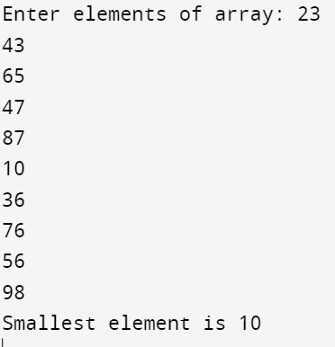

#include<stdio.h>
//find the smallest element in the integer array using recursion
int min(int arr[], int n)
{
if (n == 1)
{
return arr[0];
} else
{
if (arr[n-1] < min(arr, n - 1)) {
return arr[n-1];
} else
{
return min(arr, n - 1);
}
}
}
int main()
{
int arr[10];
printf("Enter elements of array: ");
for (int i = 0; i < 10; i++)
scanf("%d", &arr[i]);
printf("\nSmallest element is %d\n", min(arr, 10));
return 0;
}
Output:
